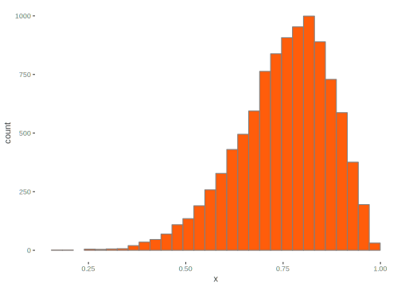

This section highlights some things to think about, as well as questions that would naturally arise for the applied researcher who might now be ready to start in on their first Bayesian analysis. It provides merely a taste regarding some select issues, and at this point one should be consulting Bayesian analysis texts directly.
An essential part of Bayesian analysis is debugging to see if your code and model are doing what it should be doing30 It really should be a part of most analysis., and this especially holds for more complex models. For many models and common settings for the number of simulations, Bayesian analysis can still take several minutes on standard computers or laptops. With big data and/or complex models, some might take hours or even days. In either case, it is a waste of time to let broken code/models run unnecessarily.
The idea with debugging is that, once you think you have everything set up the way you like, run very short attempts to see if A, the code even compiles, and B, whether it runs appropriately. As such, you will only want to set your warm-up and iterations to some small number to begin with, e.g. maybe not even 100 iterations, and no more than two chains31 With Stan I sometimes do a 1 iteration compile check first.. Sometimes it will be obvious what a problem is, such as a typo resulting in the program of choice not being able to locate the parameter of interest. Others may be fairly subtle, for example, when it comes to prior specification.
Along with shorter runs, one should consider simpler models first, and perhaps using only a subset of the data. Especially for complex models, it helps to build the model up, debugging and checking for problems along the way. As a not too complicated example, consider a mixed model for logistic regression. One could even start with a standard linear model ignoring the binary nature of the target. Getting a sense of things from that and just making sure that inputs etc. are in place, one can supply the inverse logit link and change the sampling distribution to Bernoulli. Now you can think about adding the random effect, other explanatory variables of interest, and any other complexities that had not been included yet.
As you identify issues, you fix any problems that arise and tinker with other settings. Once you are satisfied, then try for the big run. Even then, you might spot new issues with a longer chain, so you can rinse and repeat at that point. BUGS, JAGS, and Stan more or less have this capacity built in with model upgrade functions. For example, in Stan you can feed the previous setup of a model in to the main stan function. Use one for your initial runs, then when you’re ready, supply the model object as input to the ‘fit’ argument, perhaps with adjustments to the Monte Carlo settings.
Selection of prior distributions might be a bit daunting for the new user of applied Bayesian analysis, but in many cases, and especially for standard models, there are more or less widely adopted choices. Even so, we will discuss the options from a general point of view.
We can begin with noninformative priors , which might also be referred to as vague, flat, reference, objective, or diffuse. The idea is to use something that allows for Bayesian inference but puts all the premium on the data, and/or soi-disant objectivity. As we have alluded to elsewhere, if we put a prior uniform distribution on the regression coefficients (and e.g. the log of \(\sigma\)), this would be a noninformative approach that would essentially be akin to maximum likelihood estimation. One might wonder at this point why we wouldn’t just use vague priors all the time and not worry about overly influencing the analysis by the choice of prior.
As an example, let’s assume a uniform distribution \((-\infty,\infty)\) for some parameter \(\theta\). Without bounds, this prior is improper, i.e. the probability distribution does not integrate to 1. While the posterior distribution may be proper, it is left the the researcher to determine this. One also has to choose a suitable range, something which may not be easy to ascertain. In addition, the distribution may not be uniform on some transformation of the parameter, say \(\theta^2\). A Jeffreys’ prior could be used to overcome this particular issue, but is more difficult for multiparameter settings.
In general there are several issues with using a noninformative or reference prior. For many models there may be no clear choice of what to use. In any case, if the data are sufficient, the prior won’t matter, so establishing some reference to be used automatically isn’t exactly in keeping with Bayesian thinking. Furthermore, if you had clear prior information from previous research, one should use it. Furthermore, such choices can still have unintended effects on the results. In reality, any prior could be said to be weakly informative.
So instead of being completely ignorant, we can choose instead to be mostly ignorant, vague but not too vague. As an example, consider our earlier binomial distribution example. Perhaps a reasonable guess as to the probability of making a penalty was .75. With that as a basis, we could choose a Beta distribution that would have roughly 80% of its probability between .6 and .9. We know that lower values for the parameters of a beta distribution represent a less informed state of mind, and the mean of the distribution is A/(A+B), so we could just fiddle with some values to see what we can turn up. The following code suggests a \(\mathcal{B}(9,3)\) would probably be our best bet. One can examine the distribution to the right. 
diff(pbeta(c(.6, .9), 3, 1))
diff(pbeta(c(.6, .9), 8, 3))
diff(pbeta(c(.6, .9), 9, 3))[1] 0.513
[1] 0.7625194
[1] 0.7915213With our regression model we were dealing with standardized predictors, so even choosing a \(\mathcal{N}(0, 10)\) might be overly vague, though it would be near flat from -1 to 1. The nice part about setting the prior mean on zero is that it has a regularizing effect that can help avoid overfitting with smaller samples.
Thus weakly informative priors can be based on perfectly reasonable settings, and this probably makes more sense than claiming complete ignorance. Just some casual thought in many settings will often reveal that one isn’t completely ignorant. Furthermore if we have clear prior information, in the form of prior research for example, we can then use informative priors based on those results. This again would be preferable to a completely noninformative approach.
Another consideration in the choice of prior is conjugacy. Consider using the beta distribution as a prior for the binomial setting as we have done previously. It turns out that using a \(\beta(\mathcal{A}, \mathcal{B})\) results in the following posterior:
\[p(\theta|y, n) \propto \beta(y+\mathcal{A}, n-y+\mathcal{B})\]
Thus the posterior has the same parametric form as the prior, i.e. the beta distribution is congugate for the binomial likelihood. In this sense, the prior has the interpretation as providing additional data points. In our regression model, the conjugate setting uses a normal distribution for the predictor coefficients and an inverse gamma for \(\sigma^2\). In the case of exponential family distributions of generalized linear models, there are also natural conjugate prior distributions.
While there can be practical advantages to using a conjugate prior, it is not required, and for many more complex models, may not even be possible. However it might help to consider a known conjugate prior as a starting point if nothing else.
As a reminder, we pointed out in the sensitivity analysis section of the discussion on model checking, one may perform checks on settings for the model to see if changes to them results in gross changes of inference from the posterior. Part of that check should include the choice of prior, whether different parameter values for the same distribution, or different distributions altogether. Doing such a check will give you more confidence in the final selection.
The BUGS book has many examples for a wide variety of applications. The Stan github page has Stan examples for each of those BUGS examples and many more. It will not take long with a couple Bayesian texts or research articles that employ Bayesian methods to get a feel for how to go about choosing priors. One should also remember that in the face of a lot of data, the likelihood will overwhelm the prior, rendering the choice effectively moot. While the choice might be considered subjective in some respects, it is not arbitrary, and there are standard choices for common models and guidelines for more complex ones to help the researcher in their choice.
There are many ways in which one might sample from the posterior. Bayesian analysis is highly flexible and can solve a great many statistical models in theory. In practice things can be more difficult. As more complex models are attempted, new approaches are undertaken to deal with the problems in estimation that inevitably arise. In an attempt to dissolve at least some of the mystery, a brief description follows.
We have mentioned that BUGS and JAGS use Gibbs sampling, which is a special case of the Metropolis-Hastings (MH) algorithm32 Originally developed in physics in the 50s, it eventually made its way across to other fields., a very general approach encompassing a wide variety of techniques. The Metropolis algorithm can be briefly described in the following steps:
For \(t=1,2...N_{sim}:\)
Conceptually, if the proposal increases the posterior density, \(\theta^t = \theta^*\). If it decreases the proposal density, set \(\theta^t = \theta^*\) with probability \(r\), else it is \(\theta^{t-1}\). The MH algorithm generalizes the Metropolis to use asymmetric proposal distributions and uses an \(r\) to correct for asymmetry34 Given a proposal/jumping distribution \(\mathcal{J}_t\),
\(r=\frac{p(\theta^*|y)/\mathcal{J}_t(\theta^*|\theta^{t-1})} {p(\theta^{t-1}|y)/\mathcal{J}_t(\theta^{t-1}|\theta^*)}\).
Let’s look at this in generic/pseudo R code for additional clarity:
nsim = numberSimulatedDraws
theta0 = initValue
theta = c(theta0, rep(NA, nsim))
for (t in 2:nsim){
thetaStar = rnorm(1, theta[-1], sd)
u = runif(1)
r = exp(logPosterior_thetaStar - logPosterior_theta0)
theta[t] = ifelse(u<=r, thetaStar, theta[-1])
}One can see the Metropolis-Hastings Example to see the Metropolis algorithm applied to our regression problem.
The Gibbs sampler takes an alternating approach for multiparameter problems, sampling one parameter given the values of the others, and thus reducing a potentially high dimensional problem to lower dimensional conditional densities. We can describe its steps generally as follows.
Start with initial values for some ordering of the parameters \(\theta_1^0, \theta_2^0,..., \theta_p^0\)
For \(t=1,2..., N_{sim}:\)
At iteration \(t\), for \(p=1,2..., P:\)
\(\vdots\)
Again, some generic code may provide another way to understand it:
for (t in 1:nsim){
for (p in 1:P){
thetaNew[p] = rDistribution(1, theta[t,-p])
}
theta[t,] = thetaNew
}Stan uses Hamiltonian Monte Carlo, another variant of MH. It takes the parameters \(\theta\) as collectively denoting the position of a particle in some space with momentum \(\phi\) (of same dimension as \(\theta\)). Both \(\theta\) and \(\phi\) are updated at each Metropolis step and jointly estimated, though we are only interested in \(\theta\). We can describe the basic steps as follows.
The overall process allows it to move quite rapidly through the parameter space, and it can work well where other approaches such as Gibbs might be very slow. An example using HMC on the regression model data can be found in the Hamiltonian Monte Carlo ExampleSee this entry at David Mimno’s blog for a visualization of the process.
Within these MH approaches there are variations such as slice sampling, reversible jump, particle filtering, etc. Also, one can reparameterize the model to help overcome some convergence issues if applicable. In addition, there exist many approximate methods such as Variational Bayes, INLA, Approximate Bayesian Computation, etc. The main thing is just to be familiar with what’s out there in case it might be useful. Any particular method might be particularly well suited to certain models (e.g. INLA for spatial regression models), those that are notably complex, or they may just be convenient for a particular case.
Whatever program we use, the typical inputs that will need to be set regard the number of simulated draws from the posterior, the number of warm-up draws, and the amount of thinning. Only the draws that remain after warm-up and thinning will be used for inference. However, there certainly is no default that would work from one situation to the next.
Recall that we are looking for convergence to a distribution, and this isn’t determined by the number of draws alone. The fact is that one only needs a few draws for accurate inference. Even something as low as \(n_{\textrm{eff}}\) of 10 for each chain would actually be fine assuming everything else seemed in order, though typically we want more than that so that our values don’t bounce around from one model run to the next. To feel confident about convergence, i.e. get \(\hat R\) of around 1, plots looking right, etc., we will usually want in the thousands for the number of total draws. We might need quite a few more for increasing model complexity.
A conservative approach to the number of warm-up draws is half the number of runs, but this is fairly arbitrary. Thinning isn’t specifically necessary for inference if approximate convergence is achieved, but is useful with increasing model complexity to reduce autocorrelation among the estimates.
For myself, I typically run models such that the results are based on roughly \(n_{\textrm{eff}} = 1000\) estimates per chain, simply because 1000 is a nice round number and is enough to make graphical display nice. For a regression model as we have been running, that could be setting the number of simulations at 12000, the warm-up at 2000, and thinning at 10. Other models might make due with 100000, 50000, 50 respectively. You may just need to feel things out for yourself.
One of the great things about the Bayesian approach is its ability to handle extremely complex models involving lots of parameters. In addition, it will often work better (or at all) in simpler settings where the data under consideration are problematic (e.g. collinearity, separation in the logistic regression setting). While it can be quite an undertaking to set things correctly and debug, re-run etc. and generally go through the trial and error process typically associated with highly complex models, it’s definitely nice to know that you can. It will take some work, but you will also learn a great deal along the way. Furthermore, there are typically tips and tricks that can potentially help just about any model run a little more smoothly.